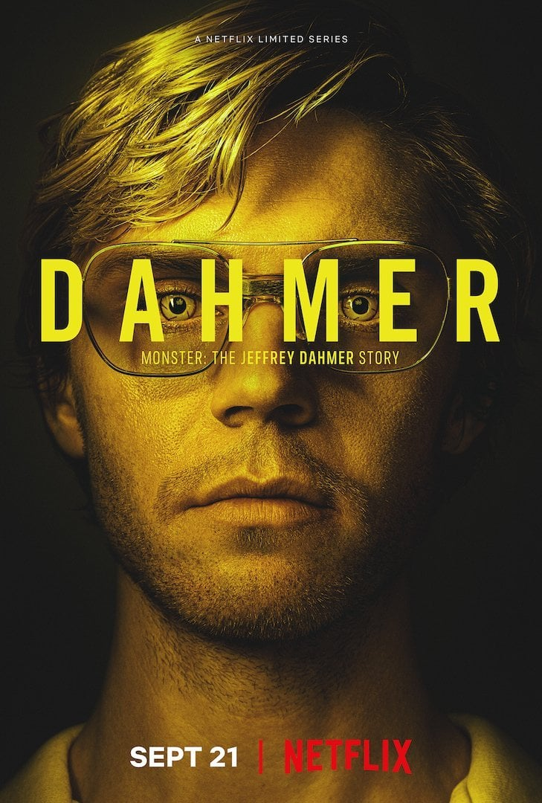

Bathory:
A condessa Elizabeth Bathory é considerada uma das maiores assassinas da história. Após a morte do marido, ela é acusada de torturar e matar cerca de 600 vítimas, entre jovens e meninas, tendo sido julgada pela morte de 80 delas.
Halloween:
Em 1963, durante uma noite fria de Halloween, o pequeno Michael Myers, de seis anos, assassina brutalmente sua irmã adolescente, Judith. Ele é condenado e fica detido por 15 anos em uma instituição sob vigilância constante do Dr. Sam Loomis. Em 1978, na véspera de Halloween, Michael rouba um carro e escapa do sanatório Smith's Grove. Ele retorna à sua pacata cidade natal de Haddonfield, Illinois, onde procura suas próximas vítimas.
Colecionador de Ossos:
Um criminologista tetraplégico orienta uma policial na caça a um assassino em série pela recriação de seus crimes na esperança de descobrir quem será a próxima vítima.
Caçada Ao Assassino BTK
Durante 31 anos, um assassino em série conhecido como BTK aterrorizou a pequena cidade de Wichita, no Kansas. BTK matou dez pessoas entre 1974 e 1991 e voltou a agir em 2005, quando foi capturado. Seu nome era Dennis Rader.
Cannibal
Carlos, um alfaiate de prestígio que vive em Granada, é também um assassino com uma monomania singular. Quando Nina, uma jovem romena à procura de sua irmã gêmea aparece em sua vida, ele se apaixona pela primeira vez... Um sentimento que põe em risco seu difícil segredo.
Zodiac
Durante os anos 60 e 70, o medo aumenta em São Francisco com os ataques de um assassino maníaco chamado Zodíaco. Investigadores e jornalistas tentam descobrir a identidade do assassino e levá-lo à justiça. Enquanto isso, Zodiac provoca as autoridades com mensagens crípticas, cifras e telefonemas ameaçadores.
O Massacre Da Serra Elétrica

Embora a história do filme “O Massacre da Serra Elétrica” seja ficcional, é importante destacar a marcante influência do assassino Ed Gein que foi na criação de Leatherface.21 de abr. de
No caminho para visitar o túmulo de seu avô, cinco jovens se perdem e mergulham em um pesadelo sem fim quando conhecem uma família de canibais. Os psicopatas atacam os forasteiros utilizando uma variedade de métodos brutais e sádicos.
Dahmer

Um Canibal Americano, nova minissérie de Ryan Murphy, acompanha a trajetória do infame serial killer Jeffrey Dahmer (Evan Peters). A produção explora a juventude do assassino até sua vida adulta e traz um retrato complexo da mente por trás do monstro que tirou a vida de 17 homens e meninos. Nascido na cidade de Milwaukee, Dahmer aterrorizou o estado de Wisconsin na década de 1980. Além dos brutais assassinatos, Jeffrey também cometia violência sexual e tortura contra sua vítimas. Seus crimes hediondos o tornaram um dos serial killers mais conhecidos e temidos dos Estados Unidos. Mesmo sua vizinha, Glenda Cleveland (Niecy Nash), tentando de várias maneiras denunciar o comportamento suspeito de Dahmer durante anos, a polícia a ignorou, facilitando os atos do serial killer. Tendo como alvo principalmente homens gays negros, Dahmer saiu impune por anos pelo simples fato das autoridades ignorarem o desaparecimento da vítimas.
The Countess
O filme é um drama da época sobre a Condessa Bathory, cuja lenda diz que acreditava que se mantinha jovem banhando-se no sangue de virgens e, para isso, assassinou mais de 650 pessoas, a maioria mulheres jovens e virgens